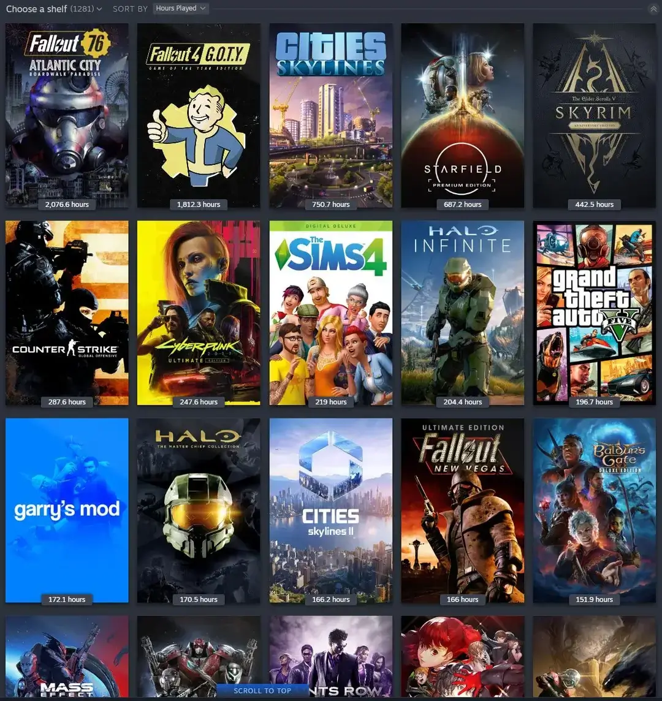

Moja pasja: Horrory i Open World

W świecie cyfrowej rozrywki szukam przede wszystkim atmosfery. Moim ulubionym gatunkiem są horrory – uwielbiam ten specyficzny dreszcz emocji i mroczny klimat, który potrafi wciągnąć na długie godziny. Cenię gry, które nie tylko straszą "jumpscare'ami", ale budują napięcie poprzez historię i oprawę dźwiękową.
Równie ważne są dla mnie produkcje typu Open-World. Wolność eksploracji i możliwość odkrywania sekretów ukrytych przez twórców to dla mnie najlepsza forma relaksu po ciężkim dniu w szkole.
Moja lista "Must Play":
- Manhunt - za niepowtarzalny, ciężki klimat.
- Max Payne - za genialną narrację noir.
- Half-Life 2 - za fizykę i rewolucję w FPS.